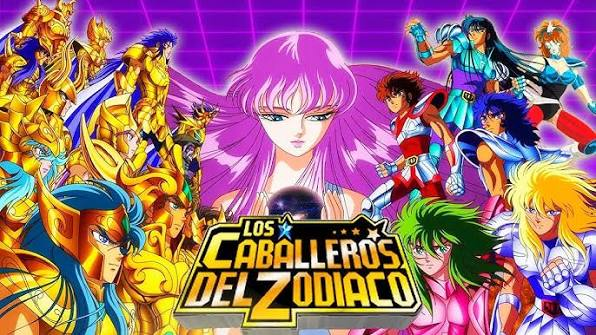
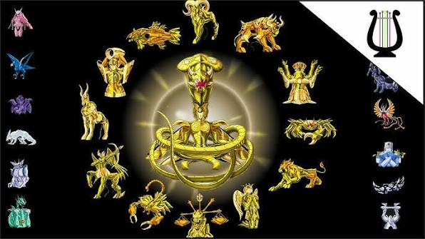

Descubre la historia de Seiya y los Caballeros de Atenea mientras protegen la paz del mundo enfrentándose a poderosos dioses y guerreros legendarios.

Seiya, Shiryu, Hyoga, Shun e Ikki son los principales protectores de Atenea.
Los doce caballeros más poderosos que custodian las casas del Santuario.
Conoce las armaduras de Bronce, Plata, Oro y las divinas.
La batalla más recordada de toda la serie.
La guerra definitiva entre Atenea y el dios del inframundo.
Poseidón, Hades y otros dioses ponen a prueba a los caballeros.

Saint Seiya es una de las series de anime más importantes de todos los tiempos. Su historia de amistad, sacrificio y superación ha inspirado a millones de personas alrededor del mundo.
Sus armaduras, batallas épicas y personajes inolvidables la convierten en un clásico del anime.